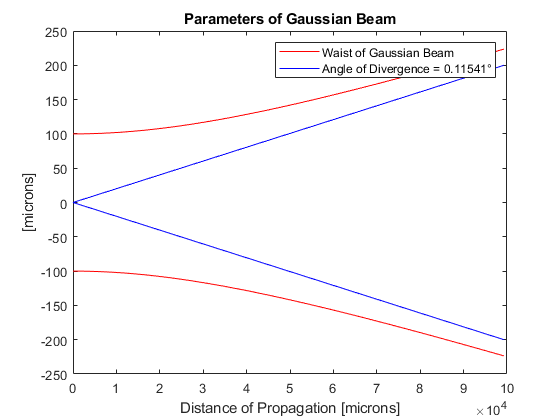
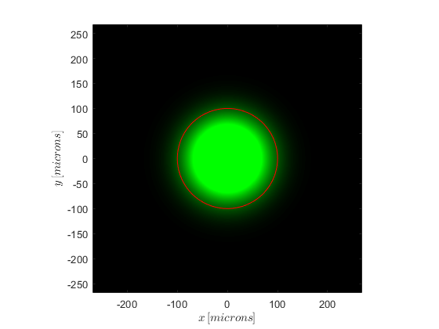
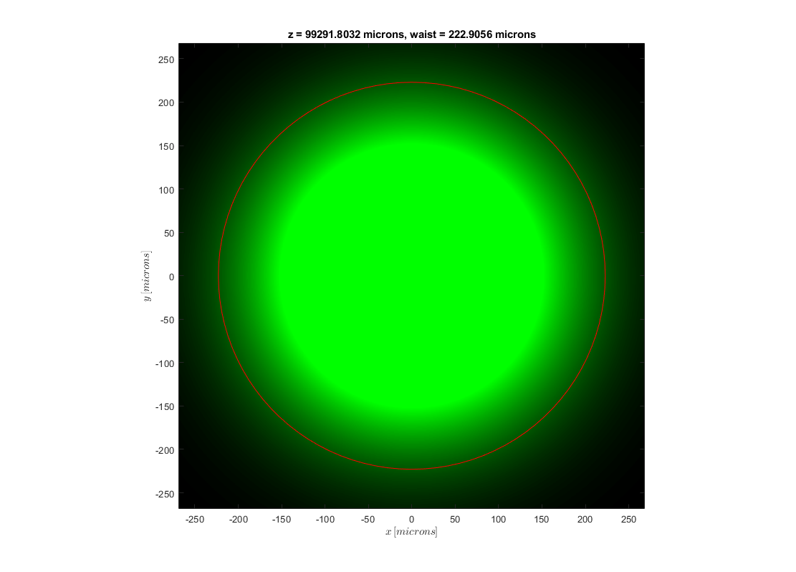

Contents
Gaussian Beam Script
% add path for classes and functions addpath ParaxialBeams addpath ParaxialBeams\Addons mapgreen = AdvancedColormap('kgg',256,[0 100 255]/255); %color of beam % Physical parameters [microns] InitialWaist = 100;%179*2; Wavelength = 0.6328; % Normalized units % InitialWaist = 1; % Wavelength = pi; % Calculating parameters of Gaussian Beam in z=0 GaussianBeamParameters = GaussianParameters(0,InitialWaist,Wavelength);
Sampling of vectors
Estimate sampling in z-direction with max propagation distance z-direction
Dz = 2*GaussianBeamParameters.RayleighDistance; % z-window (propagation distance) Nz = 2^8; % number of points in z-direction dz = Dz/(Nz-1); % Resolution in z nz = 0:(Nz-1); % Index vector z = nz*dz; % z-vector z of propagation % % Calculating parameters on z-distance (calling Object) % GaussianBeamParameters = GaussianParameters(z,InitialWaist,Wavelength); % Copying object GaussianBeamParametersZ = copy(GaussianBeamParameters); GaussianBeamParametersZ.zCoordinate = z; figure(1) plotGaussianParameters(GaussianBeamParametersZ); % After sampling z vector, Estimate sampling in x,y-direction in terms of % of max waist Gauss Beam until max z-propagation MaxWaist = GaussianParameters.waistFunction(z(end),InitialWaist,GaussianBeamParameters.RayleighDistance); N = 2^10; % Number of points in x,y axis n = -N/2+.05:N/2-1+.05; % vector with N-points with resolution 1 Dx = (1.2)*2*MaxWaist; % Size of window dx = Dx/N; % Resolution x = n*dx; % Vector with dimentions y = x; [X] = meshgrid(x,y); [~,R] = cart2pol(X,X'); %Last we estimate vectors of frequency for Fourier Transforms associated %with x,y Du = 1/dx; % Size of window du = 1/Dx; % Resolution u = n*du; % Vector with dimentions [U] = meshgrid(u); %kx,ky vectors kx = 2*pi*u; [Kx] = meshgrid(kx);
------------------------ Gaussian Beam in z = 0 ---------------------- %%
GaussianBeamParameters = GaussianParameters(0,InitialWaist,Wavelength); GB = GaussianBeam(R,GaussianBeamParameters); % Plot of Field figure(2) plotOpticalField(x, x, abs(GB.OpticalField).^2,mapgreen,'microns'); plotCircle(0,0,GaussianBeamParameters.InitialWaist); % Optic Field to propagate g = GB.OpticalField; % Matrix for save transversal fields gx = zeros(N,length(z)); gy = zeros(N,length(z)); for ii = 1:length(z) % propagation with respect to z % saving transversal fields gx(:,1) = g(N/2+1,:); gy(:,1) = g(:,N/2+1); fig = figure(3); fig.Position = [460,74,1111,798]; plotOpticalField(x, x, abs(GB.OpticalField).^2,mapgreen,'microns'); drawnow plotCircle(0,0,GB.Waist); title(['z = ',num2str(z(ii)),' microns, waist = ' num2str(GB.Waist),' microns']) pause(0.1) %propagated theoric field GB.zCoordinate = z(ii); g = GB.OpticalField; gx(:,ii)=g(N/2+1,:); gy(:,ii)=g(:,N/2+1); % end 